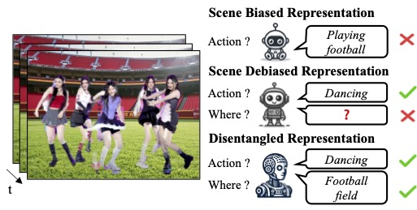
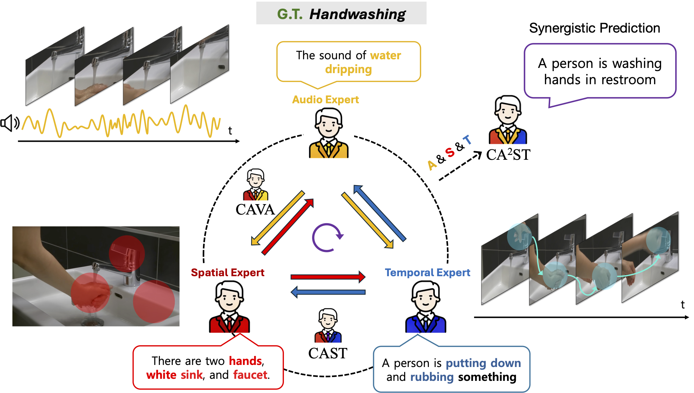

Research Interest
Video Understanding

Video Representation Learning
Human Action Recognition
Long-Term Temporal Context Modeling
Learning with Limited Supervision
Unsupervised/Self-Supervised Learning
Semi-Supervised Learning
Category Discovery
Adaptation/Robustness
Unsupervised Domain Adaptation
Continual Learning
Domain Generalization
Multi-Modal Learning

Visual + Audio + Text